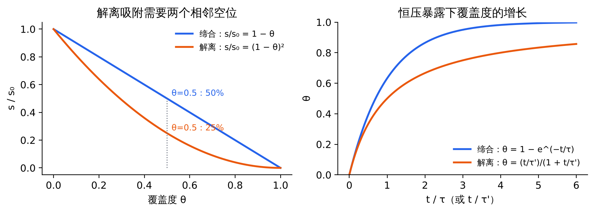
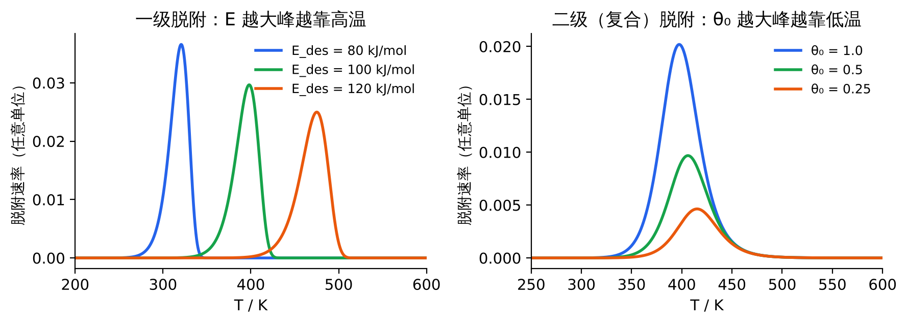
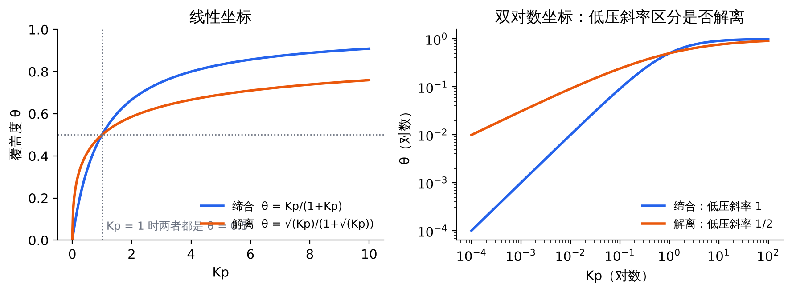

1 撞墙通量（Hertz–Knudsen 公式）
问题：气压为 p、温度为 T 的气体，每秒有多少个分子撞到每平方米的表面上？这是所有表面动力学计算的起点。
公式
$$Z_W=\frac{p}{\sqrt{2\pi m k_BT}}\qquad\Longleftrightarrow\qquad Z_W\,[\mathrm{m^{-2}s^{-1}}]=2.63\times10^{24}\,\frac{p\,[\mathrm{Pa}]}{\sqrt{M\,[\mathrm{g\,mol^{-1}}]\;T\,[\mathrm{K}]}}$$
推导
- 分子数密度：理想气体 \(p=nk_BT\)，所以 \(n=p/k_BT\)（个/m³）。
- 平均速率：Maxwell 速率分布给出 \(\bar v=\sqrt{8k_BT/\pi m}\)。
- 撞墙通量 \(Z_W=\tfrac14 n\bar v\)。为什么是 ¼：墙附近的分子只有一半朝墙飞（½）；朝墙飞的分子方向各不相同，垂直于墙的速度分量按方向平均只有 \(\bar v\) 的一半（再 ½）。严格做法是对半球立体角积分 \(\int \cos\vartheta\, d\Omega/4\pi = 1/4\)。
- 代入化简：
$$Z_W=\frac14\cdot\frac{p}{k_BT}\cdot\sqrt{\frac{8k_BT}{\pi m}}=p\sqrt{\frac{8}{16\pi m k_BT}}=\frac{p}{\sqrt{2\pi m k_BT}}$$
- 换成实用单位：\(m=M\times10^{-3}/N_A\)，把常数合并，得 \(\sqrt{N_A/(2\pi k_B\times10^{-3})}=2.63\times10^{24}\)。
物理意义
- Z_W ∝ p：压力翻倍，撞击翻倍。
- 同一压力下 Z_W ∝ T^−1/2：温度升高时分子跑得快（∝ T^1/2），但密度下降得更多（∝ T^−1），净效果是撞得更少。
- Z_W ∝ m^−1/2：轻分子（H₂）撞得最勤。
应用 1：为什么表面科学要超高真空
单层形成时间 \(\tau_{ML}=N_s/(s\,Z_W)\)。取 CO 或 N₂（M = 28），300 K，N_s ≈ 1×10¹⁹ m⁻²，s = 1：
- p = 10⁻⁴ Pa（约 10⁻⁶ Torr）：Z_W = 2.63×10²⁴ × 10⁻⁴ / √(28×300) ≈ 2.9×10¹⁸ m⁻²s⁻¹，τ_ML ≈ 3.5 s。
- p = 10⁻⁸ Pa（约 10⁻¹⁰ Torr，超高真空）：τ_ML ≈ 3.5×10⁴ s ≈ 10 h。
所以只有在超高真空里，干净表面才能保持几个小时不被污染，实验才来得及做。
应用 2：Langmuir 暴露量单位
1 L（Langmuir）= 10⁻⁶ Torr·s = 1.33×10⁻⁴ Pa·s。对 CO（300 K），1 L 对应约 3.8×10¹⁸ 次撞击/m²，量级上相当于半个单层（若 s = 1）。所以"暴露几个 L 就饱和"是常见说法。
易错
m 是一个分子的质量，要用 M/N_A 并换成 kg；p 必须用 Pa（1 bar = 10⁵ Pa，1 Torr = 133.3 Pa）；T 用 K。用实用公式时 M 直接代 g/mol 的数值。
2 粘附概率与吸附速率
公式
$$s=\frac{\text{rate of adsorption}}{\text{rate of collision}},\qquad r_{ads}=s\,Z_W,\qquad s(\theta)=s_0\,(1-\theta)^n$$
$$\frac{d\theta}{dt}=\frac{x\,s_0\,(1-\theta)^n\,Z_W}{N_s}\qquad(x=\text{sites occupied per molecule})$$
推导：为什么缔合是 (1−θ)，解离是 (1−θ)²
- 随便挑一个位点，它空着的概率是 1 − θ。
- 缔合吸附（分子整个吸附，如 CO）：撞到空位就能粘住 → \(s=s_0(1-\theta)\)。
- 解离吸附（H₂ → 2H*）：两个原子要落在两个相邻空位上，"这个位空"和"旁边那个位也空"同时成立，概率 \((1-\theta)(1-\theta)\) → \(s=s_0(1-\theta)^2\)。
- 这里假设吸附物随机分布、彼此无相互作用（Langmuir 假设）。
积分得到覆盖度随时间的变化（恒压暴露）：
- 缔合（x = 1，n = 1）：\(\dfrac{d\theta}{dt}=\dfrac{1-\theta}{\tau}\Rightarrow \theta=1-e^{-t/\tau}\)，其中 \(\tau=N_s/(s_0Z_W)\)。
- 解离（x = 2，n = 2）：\(\dfrac{d\theta}{dt}=\dfrac{(1-\theta)^2}{\tau'}\Rightarrow \dfrac{1}{1-\theta}-1=\dfrac{t}{\tau'}\Rightarrow \theta=\dfrac{t/\tau'}{1+t/\tau'}\)，其中 \(\tau'=N_s/(2s_0Z_W)\)。

图 F4 左：粘附概率随覆盖度下降，解离吸附降得更快；右：恒压暴露下的覆盖度增长曲线
要点与偏离
- 活化吸附：s₀ 本身随温度变化，\(s_0=\sigma\,e^{-E_a/RT}\)（σ 为空间/凝聚因子）。升温反而吸附更快，是活化吸附的标志。
- 前驱态吸附（precursor-mediated）：分子先以弱吸附态在表面上跑一段，找到空位再吸附。这时 s 在很高覆盖度下仍接近 s₀，不服从 (1−θ)ⁿ。
应用估算达到某一覆盖度所需时间或暴露量；判断吸附是否解离（看 s 随 θ 下降的快慢）。见题 2。
3 脱附：停留时间与程序升温脱附（TPD）
公式
$$r_{des}=-\frac{d\theta}{dt}=\nu_n\,\theta^n\,e^{-E_{des}/RT}$$
（Polanyi–Wigner 方程）
$$\tau=\frac{1}{k_d}=\tau_0\,e^{E_{des}/RT},\qquad \tau_0=\frac1\nu\approx10^{-13}\ \mathrm{s}$$
级数的含义
n = 1：分子整个脱附（CO* → CO），速率只看自己在不在；n = 2：复合脱附（2H* → H₂），两个原子必须碰到一起，速率 ∝ θ²。
停留时间：一级脱附的平均寿命就是速率常数的倒数。τ₀ 相当于吸附键的一次振动周期，"每振动一次尝试逃逸一次，成功率 e^(−E/RT)"。
应用：物理吸附 vs 化学吸附
300 K 下：E = 25 kJ/mol（物理吸附）→ τ ≈ 2×10⁻⁹ s；E = 120 kJ/mol（化学吸附）→ τ ≈ 8×10⁷ s ≈ 2.5 年。升到 500 K，后者降到约 0.3 s。
这就是催化反应要在较高温度下运行的原因之一：产物必须能及时脱附，把位点让出来。见题 4。
TPD：从峰温求脱附能
推导
线性升温 \(T=T_0+\beta t\)，把对时间的导数换成对温度的导数：
$$-\frac{d\theta}{dT}=\frac{\nu}{\beta}\,\theta^n e^{-E/RT}$$
峰顶处脱附速率对 T 的导数为零。以一级为例，对 \(R(T)=\frac{\nu}{\beta}\theta e^{-E/RT}\) 求导并令其为 0：
$$\frac{d\theta}{dT}e^{-E/RT}+\theta\,\frac{E}{RT^2}e^{-E/RT}=0\ \Rightarrow\ \frac{d\theta}{dT}=-\theta\frac{E}{RT_p^2}$$
再代入 \(d\theta/dT=-\frac{\nu}{\beta}\theta e^{-E/RT}\)，θ 消掉：
$$\frac{E}{RT_p^2}=\frac{\nu}{\beta}\,e^{-E/RT_p}\qquad\Rightarrow\qquad E\approx RT_p\left[\ln\frac{\nu T_p}{\beta}-3.64\right]\ (\text{Redhead})$$
二级时同样推导得 \(\dfrac{E}{RT_p^2}=\dfrac{\nu_2\,\theta_0}{\beta}\,e^{-E/RT_p}\)（用了峰顶 θ_p ≈ θ₀/2），θ₀ 不能消掉。
怎么读 TPD 谱
- 一级：峰温 T_p 与初始覆盖度 θ₀ 无关，峰形不对称（高温侧陡降）→ 分子脱附。
- 二级：θ₀ 越大，T_p 越低，峰形近似对称 → 复合脱附，说明原来是解离吸附。原因：θ 大时原子更容易找到伙伴，更早脱附。
- 峰温越高 → 脱附能越大 → 吸附越强。

图 F7 左：一级脱附，E_des 增大峰移向高温；右：二级脱附，θ₀ 增大峰移向低温（ν = 10¹³ s⁻¹，β = 10 K/s）
例T_p = 400 K，β = 10 K/s，ν = 10¹³ s⁻¹：ln(10¹³×400/10) = 33.62，减 3.64 得 29.98，E ≈ 8.314×400×29.98 ≈ 100 kJ/mol。
4 Langmuir 等温式与吸附热
四个假设
① 所有位点等价；② 只吸附单层，一个位点放一个分子（或原子）；③ 吸附物之间没有相互作用，所以吸附热与覆盖度无关；④ 吸附与脱附处于动态平衡。
4.1 缔合吸附 A + * ⇌ A*
推导
吸附速率 = \(k_a\,p\,(1-\theta)\)（撞上来且落在空位上）；脱附速率 = \(k_d\,\theta\)。平衡时两者相等：
$$k_ap(1-\theta)=k_d\theta\ \Rightarrow\ \frac{\theta}{1-\theta}=Kp\ \Rightarrow\ \theta=\frac{Kp}{1+Kp},\qquad K=\frac{k_a}{k_d}$$
和前两节连起来：\(k_ap=s_0Z_W/N_s\)，\(k_d=\nu e^{-E_{des}/RT}\)，所以 \(K=\dfrac{s_0}{N_s\nu\sqrt{2\pi mk_BT}}\,e^{E_{des}/RT}\)——K 由"粘得多牢"和"走得多慢"共同决定。
结论
$$\theta=\frac{Kp}{1+Kp},\qquad K=K_0\,e^{-\Delta H_{ads}/RT}$$
ΔH_ads < 0，所以升温时 K 变小、同压下覆盖度降低
低压 θ ≈ Kp（Henry 区，线性）；高压 θ → 1（饱和）；p = 1/K 时 θ = 1/2。
用吸附量表示：θ = V/V_m。线性化：\(\dfrac{p}{V}=\dfrac{1}{KV_m}+\dfrac{p}{V_m}\)，p/V 对 p 作直线，斜率 1/V_m，截距 1/(KV_m)。
4.2 解离吸附 A₂ + 2* ⇌ 2A*
推导
吸附需要两个相邻空位，速率 \(k_ap(1-\theta)^2\)；复合脱附需要两个 A* 相遇，速率 \(k_d\theta^2\)：
$$k_ap(1-\theta)^2=k_d\theta^2\ \Rightarrow\ \frac{\theta}{1-\theta}=\sqrt{Kp}\ \Rightarrow\ \theta=\frac{\sqrt{Kp}}{1+\sqrt{Kp}}$$
判据低压 θ ≈ √(Kp)：在双对数图上斜率是 1/2（缔合是 1）。线性化用 \(\dfrac1V=\dfrac1{V_m}+\dfrac{1}{V_m\sqrt K}\,p^{-1/2}\)。动力学里也会看到 H₂ 的表观级数约 0.5，原因相同。

图 F1 缔合与解离 Langmuir 等温线；右图双对数坐标下低压斜率 1 vs 1/2
4.3 竞争吸附（A、B 抢同一种位点）
推导
每个物种各自平衡：\(\theta_A=K_Ap_A\theta_*\)，\(\theta_B=K_Bp_B\theta_*\)；位点守恒 \(\theta_*+\theta_A+\theta_B=1\)。代入得
$$\theta_*=\frac{1}{1+K_Ap_A+K_Bp_B},\qquad \theta_A=\frac{K_Ap_A}{1+K_Ap_A+K_Bp_B},\qquad \theta_B=\frac{K_Bp_B}{1+K_Ap_A+K_Bp_B}$$
若某物种解离吸附（如 H₂），它在分母里的项写成 \(\sqrt{K_{H_2}p_{H_2}}\)。
意义分母 = 1（空位）+ 每个物种"占位能力"之和。强吸附物种（K 大）会把别的物种挤掉——这就是产物抑制和催化剂中毒的数学来源。
4.4 等量吸附热（Clausius–Clapeyron）
推导
取同一覆盖度 θ：由 θ/(1−θ) = Kp 知 Kp 为常数。代入 \(K=K_0e^{-\Delta H_{ads}/RT}\)：
$$\ln p=\text{const}+\frac{\Delta H_{ads}}{RT}\ \Rightarrow\ \left(\frac{\partial\ln p}{\partial(1/T)}\right)_\theta=\frac{\Delta H_{ads}}{R}\ \Rightarrow\ \ln\frac{p_2}{p_1}=\frac{\Delta H_{ads}}{R}\left(\frac1{T_2}-\frac1{T_1}\right)$$
意义温度越高，要达到同样覆盖度需要的压力越大（吸附放热）。若算出的 ΔH_ads 随 θ 变化，说明位点不等价或有相互作用，Langmuir 假设不成立。经验上 |ΔH| < 40 kJ/mol 多为物理吸附，> 80 kJ/mol 多为化学吸附。
4.5 其他等温式（Langmuir 不适用时）
| 等温式 | 形式 | 对应的物理图像 |
|---|
| Freundlich | \(\theta=c\,p^{1/n}\) | 位点不均匀，吸附热随 θ 对数下降 |
| Temkin | \(\theta=c_1\ln(c_2p)\) | 吸附热随 θ 线性下降（中等覆盖区常用，如 Fe 上 N₂） |
| BET | \(\dfrac{p}{V(p_0-p)}=\dfrac{1}{cV_m}+\dfrac{c-1}{cV_m}\dfrac{p}{p_0}\) | 多层物理吸附；N₂ 77 K 测比表面积，用 p/p₀ ≈ 0.05–0.3 的数据 |
应用：比表面积
\(S=\dfrac{V_m}{22414\ \mathrm{cm^3\,mol^{-1}}}\,N_A\,\sigma\)，N₂ 分子截面积 σ = 0.162 nm²，合并常数得 S (m²/g) ≈ 4.35 × V_m (cm³ STP/g)。BET 作图：斜率 a、截距 b，则 V_m = 1/(a + b)，c = a/b + 1。见题 10。